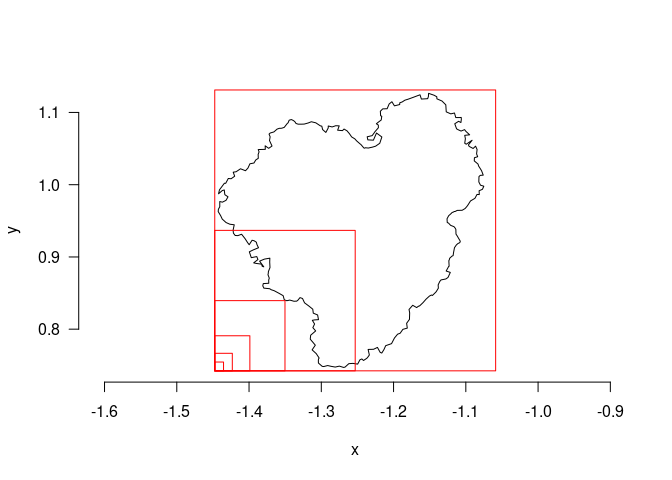

habtools is a collection of tools for working with 3D surfaces and objects. There are helper tools for sampling and simulating surfaces, as well as tools for estimating metrics like surface area, rugosity, fractal dimension, convexity, sphericity, second moments of volume, circularity and more.
Installation
A CRAN version of habtools is forthcoming. You can also install the development version from GitHub with:
# install.packages("devtools")
devtools::install_github("jmadinlab/habtools")Examples
There are vignettes demonstrating the use of habtools for digital elevation models (DEMs) and 3D meshes, as well as a vignette covering fractal dimension methods.
There are currently two data sets accompanying this package. horseshoe is a DEM of a coral reef in RasterLayer format, and mcap is a 3D mesh of a coral growing on a reef in mesh3d format.
The following example calculates height range, rugosity and fractal dimension of a 2 x 2 m plot of horseshoe.
library(habtools)
library(raster)
# Let's take a subset DEM of size = 2
dem <- dem_crop(horseshoe, x0 = -465, y0 = 1265, L = 2, plot = TRUE)
# height range
hr(dem)
#> [1] 1.368289
# rugosity
rg(dem, L0 = 0.0625)
#> [1] 1.75829
# fractal dimension
fd(dem, method = "hvar", keep_data = TRUE, plot=TRUE, diagnose = TRUE)

#> $D
#> [1] 2.159332
#>
#> $data
#> l h
#> 1 0.0625 0.07207143
#> 2 0.1250 0.16465515
#> 3 0.2500 0.31394699
#> 4 0.5000 0.58224221
#> 5 1.0000 0.88901201
#> 6 2.0000 1.36828852
#>
#> $lvec
#> [1] 0.0625 0.1250 0.2500 0.5000 1.0000 2.0000
#>
#> $D_vec
#> [1] 1.808052 2.068927 2.108902 2.389417 2.377902
#>
#> $var
#> [1] 0.2420993
#>
#> $method
#> [1] "hvar"The next example calculates height range, rugosity and fractal dimension for the coral colony mcap. Because 3D meshes can have more than one z coordinate for a given xy (i.e., they have overhangs), we use cube counting for fractal dimension.

# height range
hr(mcap)
#> [1] 0.2185397
# rugosity
rg(mcap, L0 = 0.045)
#> [1] 2.882813
# fractal dimension
fd(mcap, method = "cubes", keep_data = TRUE, plot=TRUE, diagnose = TRUE)
#> lvec is set to c(0.053, 0.106, 0.212, 0.423).
#> $D
#> [1] 2.315246
#>
#> $data
#> l n
#> 4 0.05291204 134
#> 3 0.10582408 31
#> 2 0.21164817 8
#> 1 0.42329634 1
#>
#> $lvec
#> [1] 0.42329634 0.21164817 0.10582408 0.05291204
#>
#> $D_vec
#> [1] 2.111893 1.954196 3.000000
#>
#> $var
#> [1] 0.5638126
#>
#> $method
#> [1] "cubes"